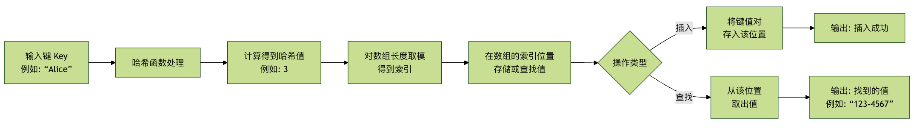
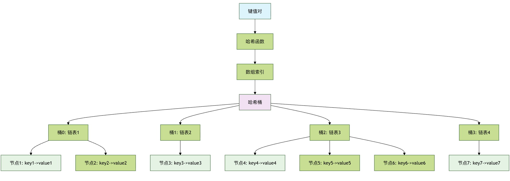
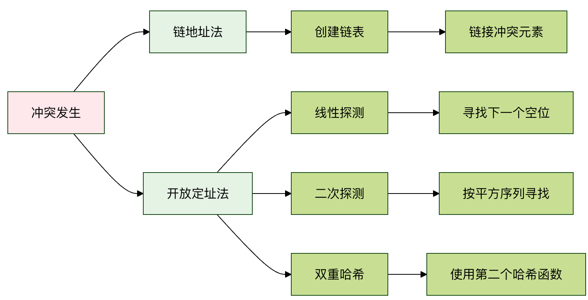

Hash table
A hash table, also called a hash map, is an extremely efficient data structure.
Hash tables can, in the average case, with close toO(1)The time complexity for inserting, deleting, and searching data is much better than array traversal (O(n)) and binary search tree search (O(log n)) is much faster.
| Operation | Array/Linked list | Hash table |
|---|---|---|
| Search | O(n) | O(1) |
| Insert | O(n) | O(1) |
| Delete | O(n) | O(1) |
| Space efficiency | High | Medium |
Hash tableJust like a smart locker system:
- Traditional locker: You need to remember which cabinet each item is in (linear search)
- Smart locker: You tell the administrator the item name, and he directly tells you the cabinet number (hash lookup)
Core idea:
ThroughHash functionwillKeyConverted toArray index, enabling fast access.
Real-life case:
- Dictionary lookup: Quickly locate the page based on the first letter of the word
- Phone book: Sort by surname pinyin to quickly find contacts
- Library call number: directly find the bookshelf location based on the classification number
Imagine you have a huge library with thousands of books.
If you want to find a specific book, such as Harry Potter, what would you do? The dumbest way is to start with the first book on the first shelf and look one by one until you find it—this could take hours or even days!
What would a smart librarian do? They would use anIndexing system: Based on some rule of the book title or author name (such as the first letter), quickly locate the rough area where the book is, and then only search within that small area. The idea of this indexing system isHash tablethe core of.
Basic concepts
What is a hash table?
A hash table is a data structure that directly accesses values through keys., it uses something calledHash functionthe magic formula that converts a key of arbitrary size (such as a string, a number, or an object) into a fixed-size number, called a hash value.Hash valueorHash codeThen, use this hash value as the array'sIndexindex, and store the value in the array position corresponding to this index.
This process is like assigning each key a unique seat number (hash value), then telling it: your data is placed in the seat with this number. When you want to find this data, you just recalculate the seat number using the same rule, then walk directly to it—no need to check seat by seat.
Core components
A hash table mainly consists of the following three core parts:
- Key: The identifier you use when storing and looking up data. For example, in a phone book, the person's name is the key.
- Value: the actual data associated with the key. In a phone book, the phone number is the value.
- Hash function (Hash Function): The mathematical function that maps keys to array indices. It is the heart of the hash table.
Diagram of how it works
Let's use a simple example. Suppose we want to create a phone book that maps names to phone numbers.

The figure above clearly shows the workflow of a hash table: whether inserting or looking up, it always starts with a key, calculates the index through the hash function, and then directly operates on that position in the array, achieving high-speed access.
Hash function design
Characteristics of a good hash function
| Features | Description | Importance |
|---|---|---|
| Determinism | The same input always produces the same output | ⭐⭐⭐⭐⭐ |
| Uniform distribution | Output is uniformly distributed within the hash table range | ⭐⭐⭐⭐⭐ |
| Efficient computation | The calculation process is simple and fast | ⭐⭐⭐⭐ |
| Avalanche effect | A tiny change in input causes a huge change in output | ⭐⭐⭐ |
Common hash functions
| Type | Example | Applicable scenarios |
|---|---|---|
| Division-remainder method | hash = key % table_size |
Integer key |
| Multiplication method | hash = floor(key * A % 1 * table_size) |
Floating-point key |
| Digit analysis method | Analyze the distribution patterns of numbers | Data with specific patterns |
| Mid-square method | hash = (key * key) // 10^(n/2) % table_size |
Numeric key |
| String hashing | Character-by-character processing | String key |
Collision resolution methods
Separate Chaining
| Features | Description | Time complexity |
|---|---|---|
| Principle | Each hash bucket maintains a linked list | |
| Insert | Add at the head of the corresponding linked list | O(1) |
| Search | Search in the corresponding linked list | O(k), where k is the length of the linked list |
| Delete | Delete from the corresponding linked list | O(k) |
| Space overhead | Requires extra pointer storage | Relatively large |
Open Addressing Method (Open Addressing)
| Type | Probe sequence | Advantages | Disadvantages |
|---|---|---|---|
| Linear probing | h, h+1, h+2, ... |
Simple and easy to implement | Prone to clustering |
| Quadratic probing | h, h+1², h+2², ... |
Reduce clustering | May not be able to probe all positions |
| Double hashing | h, h+hash2(key), h+2*hash2(key), ... |
Uniform distribution | Computationally complex |
Hash table structure diagram

Comparison of conflict resolution methods

In-depth understanding of hash functions
The hash function is the key to hash table efficiency. A good hash function should have the following characteristics:
- Determinism: The same key must always produce the same hash value.
- Efficiency: The calculation speed must be fast.
- Uniform distribution: It can map different keys as evenly as possible across the entire array space, reducing collisions.
An example of a simple hash function
Suppose our keys are strings and the array length is 10. A simple hash function could be to add the ASCII codes of each character in the string, then take the remainder modulo the array length.
Example
"""
A simple string hash function.
:param key: The input key (string)
:param array_size: The size of the hash table array
:return: The computed array index
"""
total = 0
for char in key:
# Convert the character to its ASCII code value and accumulate
total += ord(char)
# Take modulo of the array size to ensure the index is within the array range
return total % array_size
# Test our hash function
keys_to_test = ["Alice", "Bob", "Charlie", "David"]
array_size = 10
print("Simple hash function test results:")
for key in keys_to_test:
hash_index = simple_hash(key, array_size)
print(fKey '{key}' -> hash index: {hash_index})
Output result:
简单哈希函数测试结果： 键 'Alice' -> 哈希索引: 0 键 'Bob' -> 哈希索引: 8 键 'Charlie' -> 哈希索引: 5 键 'David' -> 哈希索引: 3
This function is simple, but it may not be the best, because different strings can produce the same sum (e.g., ab and ba), leading toHash collision。
Hash conflicts and resolution methods
Hash collisioncollisions. A collision refers to two or more different keys producing the same array index after being processed by the hash function. It is like two moviegoers being assigned the same seat number, which is clearly a problem. Collisions are inevitable because the range of hash values (array size) is usually finite, while the possible keys are infinite.
There are two main classic methods to resolve conflicts:
Method 1: Chaining method
This is the most common method. It does not place data directly in each array position; instead, it stores aLinked listlinked list (or another data structure, such as a red-black tree) at each array position. When a collision occurs, the new key-value pair is added to the linked list at that position.
Process description:
Compute the hash value of the key and find the array index.
If the linked list is not empty (a collision occurs), traverse the linked list.
- If the same key is found, update its value (or handle it as needed).
- If the same key is not found, add the new key-value pair to the end of the linked list.
Example
"""A hash table implementation using chaining to resolve collisions."""
def __init__(self, size=10):
"""Initialize the hash table.
:param size: initial size of the underlying array
"""
self.size = size
# Create a list of size `size`, with each element initialized to an empty list (representing a linked list)
self.table = [[] for _ in range(size)]
def _hash(self, key):
"""Internal hash function. Here we use Python's built-in hash function and take the modulo."""
return hash(key) % self.size
def insert(self, key, value):
"""Insert a key-value pair into the hash table."""
index = self._hash(key)
bucket = self.table[index] # Get the 'bucket' (linked list) corresponding to this index
# Traverse the bucket and check whether the key already exists
for i, (k, v) in enumerate(bucket):
if k == key:
# Key already exists, update the value
bucket[i] = (key, value)
return
# Key does not exist, add it to the end of the linked list
bucket.append((key, value))
def get(self, key):
"""Get the value by key. If the key does not exist, return None."""
index = self._hash(key)
bucket = self.table[index]
for k, v in bucket:
if k == key:
return v
return None # Key does not exist
def delete(self, key):
"""Delete the key-value pair by key."""
index = self._hash(key)
bucket = self.table[index]
for i, (k, v) in enumerate(bucket):
if k == key:
del bucket[i] # Delete this node from the linked list
return True # Deletion succeeded
return False # Key does not exist, deletion failed
def display(self):
"""Print all contents of the hash table."""
for i, bucket in enumerate(self.table):
print(fIndex {i}: {bucket})
# Usage example
print("\n--- Chaining hash table example ---)
phone_book = HashTableChaining(5)
phone_book.insert("Alice", "123-4567")
phone_book.insert("Bob", "987-6543")
phone_book.insert("Charlie", "555-1234")
# Assume the hash value of "David" collides with "Alice" (for demonstration)
phone_book.insert("David", "111-2222")
print("Hash table after inserting data:")
phone_book.display()
print(f"\nLook up 'Bob' phone: {phone_book.get('Bob')}")
print(f"Look up non-existent 'Eve': {phone_book.get('Eve')}")
phone_book.delete("Charlie")
print("\nHash table after deleting 'Charlie':")
phone_book.display()
Output result:
--- 链地址法哈希表示例 ---
插入数据后的哈希表：
索引 0: [('David', '111-2222')]
索引 1: []
索引 2: [('Alice', '123-4567')]
索引 3: [('Charlie', '555-1234')]
索引 4: [('Bob', '987-6543')]
查找 'Bob' 的电话: 987-6543
查找不存在的 'Eve': None
删除 'Charlie' 后的哈希表：
索引 0: [('David', '111-2222')]
索引 1: []
索引 2: [('Alice', '123-4567')]
索引 3: []
索引 4: [('Bob', '987-6543')]
Note: To clearly demonstrate collisions, the array size is set to 5 in the example, and we use
hash(key), actual conflicts may not be obvious. Insimple_hashUnder the function,"Alice"and"David"keys that may produce the same index, thus showing how the chaining method stores multiple entries under one index.
Method 2: Open addressing method
This method stores all elements directly in the array itself. When a collision occurs, it searches for the next free position in the array according to a probing sequence.
Common probing methods:
- Linear probing: If position
iis occupied, then tryi+1,i+2,i+3... until an empty slot is found. - Quadratic probing: If position
iis occupied, then tryi+1^2,i+2^2,i+3^2...。 - Double hashing: Use a second hash function to compute the probing step size.
Here we implement a simple linear probing:
Example
"""Hash table implementation using linear probing (open addressing) to resolve collisions."""
def __init__(self, size=10):
self.size = size
# Use a special marker `None` to represent empty slots, and a marker (like `'DELETED'`) to represent deleted positions.
# For simplicity, only `None` is used for empty slots; the search stops when it encounters `None`.
self.keys = [None] * size
self.values = [None] * size
def _hash(self, key):
return hash(key) % self.size
def insert(self, key, value):
index = self._hash(key)
original_index = index
# Use linear probing to find an empty slot or the same key
while self.keys[index] is not None:
if self.keys[index] == key:
# Key already exists, update the value
self.values[index] = value
return
index = (index + 1) % self.size # Move to the next position (circular array)
if index == original_index:
# Went a full circle; the table is full (in practice, should resize)
raise Exception("Hash table is full")
# Found an empty slot, insert
self.keys[index] = key
self.values[index] = value
def get(self, key):
index = self._hash(key)
original_index = index
while self.keys[index] is not None:
if self.keys[index] == key:
return self.values[index]
index = (index + 1) % self.size
if index == original_index:
break # Went a full circle without finding it
return None
def display(self):
for i in range(self.size):
if self.keys[i] is not None:
print(f"Index {i}: key={self.keys[i]}, value={self.values[i]}")
else:
print(fIndex {i}: empty)
# Usage example
print("\n--- Linear Probing Hash Table Example ---)
ht_linear = HashTableLinearProbing(7) # Small size makes probing easy to see
ht_linear.insert("Apple", 10)
ht_linear.insert("Banana", 20)
ht_linear.insert("Cherry", 30)
# Assume 'Date' and 'Apple' hash collide
ht_linear.insert("Date", 40)
print("Hash table after inserting data:")
ht_linear.display()
print(f"\nSearch 'Banana': {ht_linear.get('Banana')})
print(fSearch 'Date' (inserted after collision): {ht_linear.get('Date')})
Output result:
--- 线性探测哈希表示例 --- 插入数据后的哈希表： 索引 0: 键=Apple, 值=10 索引 1: 键=Date, 值=40 索引 2: 键=Banana, 值=20 索引 3: 键=Cherry, 值=30 索引 4: 空 索引 5: 空 索引 6: 空 查找 'Banana': 20 查找 'Date' (冲突后插入的): 40
Note: In open addressing, deletion is tricky: you cannot simply set the position to
Noneempty (null); otherwise, it would break the probing sequence. Usually a special "deleted" marker is used. For simplicity, this example does not implement deletion.
Comparison of the two methods
| Features | Separate Chaining | Open Addressing |
|---|---|---|
| Implementation Difficulty | Relatively Simple | Relatively complex, especially deletion operations |
| Space overhead | Requires extra space to store pointers (linked list) | All data is in the array, so space utilization may be higher |
| Collision Impact | Collisions only affect the performance of the same bucket (linked list) | Collisions affect the positions of subsequent insertions and may lead to "clustering" |
| Resize Timing | Expand when the average linked list length exceeds the threshold | Expand when the load factor (number of elements / array size) exceeds a threshold |
| Applicable scenarios | General, more common | Cache-friendly, suitable for scenarios with known maximum data size or tight memory |
Performance of hash tables and load factor
The efficiency of a hash table depends heavily on a key metric:Load Factor。
Load factor = number of elements stored in the hash table / total size of the hash table array
- Low Load Factor(e.g., 0.5): Means the array still has many empty slots, collision probability is low, and operations are fast.
- High Load Factor(e.g., 0.9): Means the array is almost full, collision probability increases sharply, linked lists become longer or probing distances become longer, and performance degrades.
To maintain high performance, when the load factor exceeds a certain threshold (e.g., 0.75), the hash table will expand:ResizeOperations:
- Create a new, larger array (usually twice the original size).
- Traverse all key-value pairs in the old hash table.
- Based on the new array size, use the hash function to recompute the index for each key, and insert it into the new array.
This process is calledRehashingAlthough this is time-consuming, it can significantly reduce the load factor and restore the hash table to high efficiency.
Practical exercise: build a word counter
Let's use a self-built chaining hash table to solve a practical problem: counting the number of occurrences of each word in a piece of text.
We will use the following text as test data (you can copy it into your code):
the quick brown fox jumps over the lazy dog the dog is not lazy at all
Example
print("\n=== Practical Exercise: Word Counter ===)
# 1. Create a hash table instance
word_counter = HashTableChaining(size=10)
# 2. Provided test text
text = "the quick brown fox jumps over the lazy dog the dog is not lazy at all"
words = text.split() # Split the text into a list of words
print(Processed word list:, words)
# 3. Iterate through words, insert into hash table
for word in words:
current_count = word_counter.get(word)
if current_count is None:
# First occurrence of a word, count is 1
word_counter.insert(word, 1)
else:
# Word already exists, increment count by 1
word_counter.insert(word, current_count + 1)
# 4. Output the statistical results
print("\nWord occurrence statistics:)
# Note: Our display method prints by index; here we write a more user-friendly output
all_entries = []
for bucket in word_counter.table:
all_entries.extend(bucket) # Merge entries in all buckets
for word, count in all_entries:
print(f'{word}': {count} times)
# 5. Verify a specific word
test_word = "the"
print(f"\nVerify: The word '{test_word}' appeared {word_counter.get(test_word)} times.)
test_word = "lazy"
print(fVerify: The word '{test_word}' appeared {word_counter.get(test_word)} times.)
Output result:
=== 实践练习：单词计数器 === 处理的单词列表: ['the', 'quick', 'brown', 'fox', 'jumps', 'over', 'the', 'lazy', 'dog', 'the', 'dog', 'is', 'not', 'lazy', 'at', 'all'] 单词出现次数统计： 'the': 3 次 'quick': 1 次 'brown': 1 次 'fox': 1 次 'jumps': 1 次 'over': 1 次 'lazy': 2 次 'dog': 2 次 'is': 1 次 'not': 1 次 'at': 1 次 'all': 1 次 验证：单词 'the' 出现了 3 次。 验证：单词 'lazy' 出现了 2 次。
Congratulations! You have successfully used your own hash table implementation to complete a practical task. In real-world programming, you rarely need to implement a hash table yourself, because modern programming languages (such as Python'sdictJava'sHashMapC++'sunordered_map) all provide highly optimized, powerful built-in hash table implementations. Understanding their principles can help you use them more wisely and efficiently.
Summary and key points review
What is a hash table: An efficient data structure that directly accesses values via keys, with an average time complexity ofO(1)。
Core Mechanism： Hash functionConvert the key into an array index.
Key Challenges： Hash collision—different keys map to the same index.
Solution：
- Separate Chaining: Each index position stores a linked list to hold colliding key-value pairs.
- Open Addressing: Find the next empty slot within the array according to the probing sequence.
Performance Critical： Load Factor. When the load factor is too high, it needs toResizeandRehashingto restore performance.
Practical Applications: Hash tables are a cornerstone of programming, widely used in countless scenarios such as database indexing, cache systems, set membership checks, object property storage, and many more.
other extensions